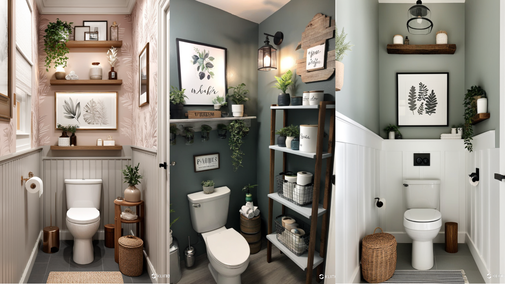

Toilet Room Decor: Creative Ideas to Elevate Your Bathroom Space
When it comes to home improvement, the toilet room is often overlooked. However, a well-decorated bathroom can transform the space into a stylish and relaxing retreat. Whether you have a small powder room or a spacious master bath, here are some creative toilet room decor ideas to enhance its aesthetic appeal and functionality.
1. Choose a Theme or Color Palette
One of the easiest ways to achieve a cohesive look is by selecting a theme or a color palette. Whether you prefer minimalist designs, vintage charm, or a spa-like ambiance, your decor should reflect your personal style. Soft, neutral colors can create a serene atmosphere, while bold hues can add a touch of personality.
2. Incorporate Stylish Storage Solutions
A clutter-free bathroom instantly feels more inviting. Consider installing floating shelves, over-the-toilet cabinets, or stylish baskets to store essentials. Decorative storage solutions like glass jars for cotton balls or woven baskets for toiletries can enhance both form and function.
3. Upgrade Your Lighting
Lighting plays a crucial role in toilet room decor. Soft LED lights or a chic pendant lamp can make a dramatic difference. If possible, maximize natural light by using sheer curtains or frosted glass windows. Layered lighting with wall sconces or vanity lights can create a warm and inviting atmosphere.
4. Add Greenery and Natural Elements
Bringing a touch of nature into your toilet room decor can add freshness and vibrancy. Consider placing small potted plants like succulents, aloe vera, or bamboo in corners or on shelves. Wooden accents, stone textures, or woven rugs can also enhance the organic feel of the space.
5. Install Decorative Wall Art and Mirrors
Wall art is an excellent way to personalize your toilet room decor. Choose framed prints, canvas art, or even wallpaper with interesting patterns to elevate the space. A well-placed mirror can make a small bathroom feel more spacious while also adding an element of sophistication.
6. Invest in High-Quality Towels and Accessories
Luxury towels, stylish soap dispensers, and matching bath mats can make a world of difference in your bathroom's aesthetic. Opt for plush, absorbent towels in colors that complement your decor. Small details like coordinated toothbrush holders and soap trays can create a polished look.
7. Use Scent and Ambiance to Enhance Comfort
A welcoming bathroom engages all the senses. Scented candles, essential oil diffusers, or fresh flowers can enhance the overall ambiance. Choose relaxing scents like lavender, eucalyptus, or citrus to create a spa-like experience.
8. Keep It Clean and Well-Maintained
No matter how beautifully decorated your toilet room is, cleanliness is key. Regularly clean surfaces, replace worn-out decor items, and keep the space organized. A fresh and hygienic bathroom is always more inviting.
By implementing these toilet room decor ideas, you can transform your bathroom into a stylish and functional oasis. With the right balance of aesthetics and practicality, even the smallest details can make a significant impact on the overall look and feel of the space.